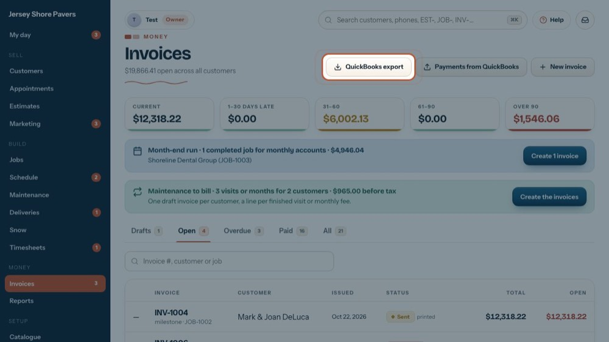
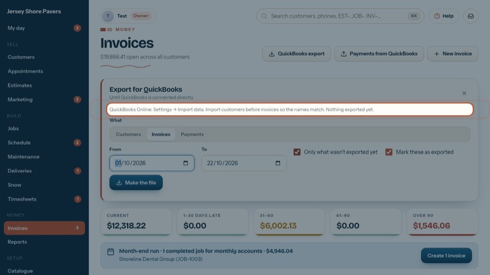
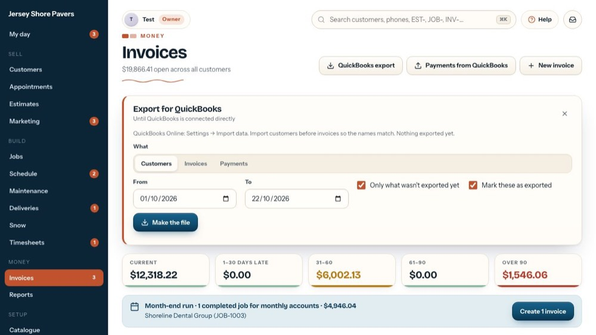
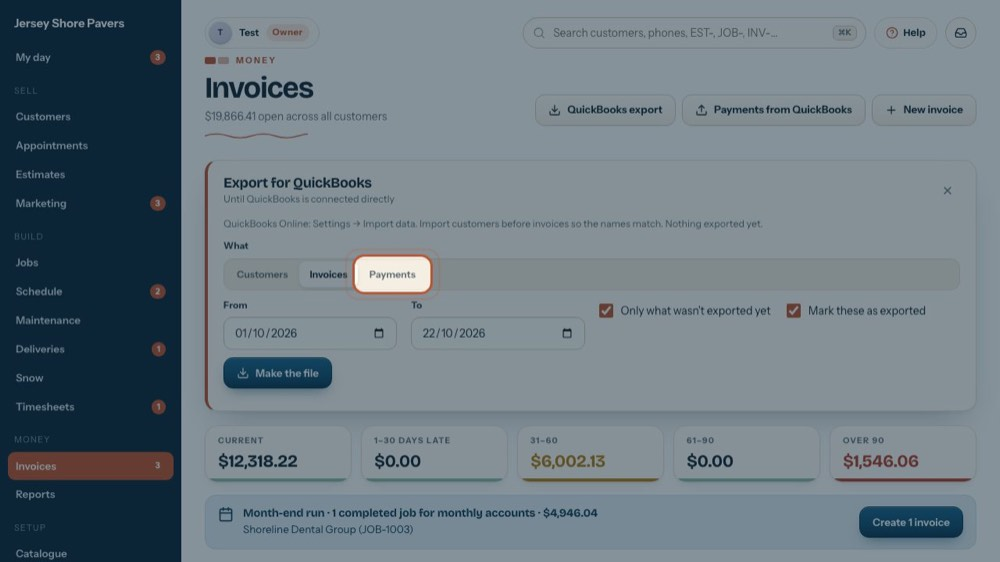
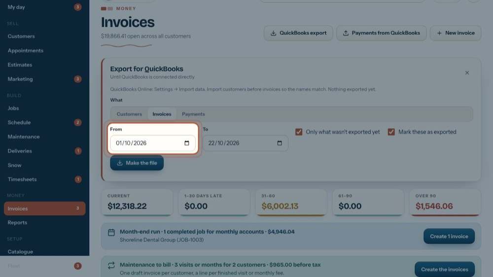
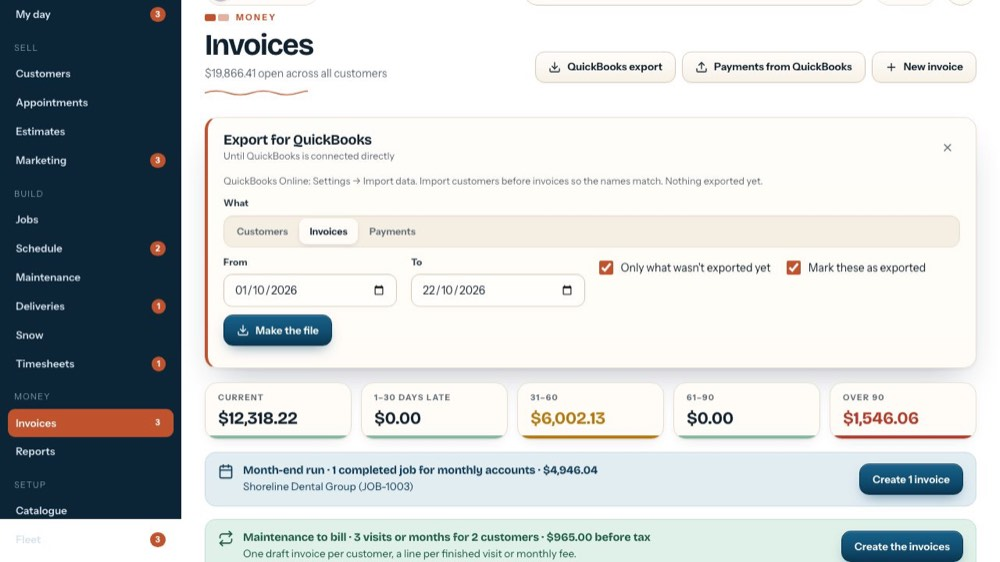
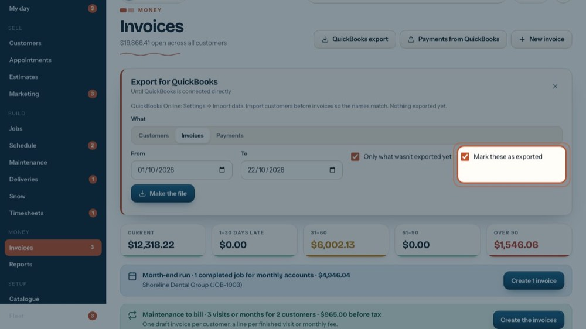
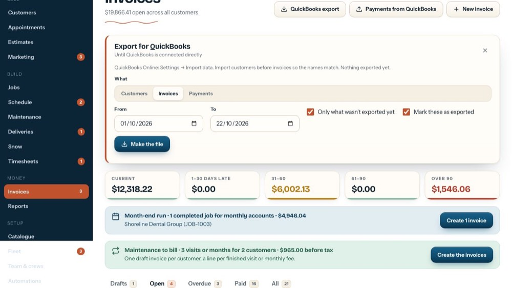

Make the QuickBooks export file
In the office app, press Help and type make the quickbooks export file
: the tour plays on your own screen, with your own data.
-

1QuickBooks export
Until QuickBooks is connected directly, the office sends it files. Open the export panel.
-

2Where it goes
In QuickBooks Online: Settings, then Import data. This line also says when you last exported.
-
 3
3Customers first
Export customers before invoices, so every invoice finds its customer in QuickBooks.
-

4Then invoices
The invoices sent in the date range, ready for QuickBooks' invoice import.
-

5Payments
Payments received in the range, as a deposit list the bookkeeper matches to the bank. Click it when that's the file you need.
-

6From and To
The date range. It starts on the 1st of this month and runs to today; change either date.
-

7Only what wasn't exported yet
Leave it ticked so nothing goes into QuickBooks twice. Untick it to export the whole range again.
-

8Mark these as exported
Remembers what went into this file, so 'Only what wasn't exported yet' skips it next time.
-

9Make the file
Builds the file and shows its name and row count, with Download (a .csv file) and Copy. Then import it in QuickBooks. The tour doesn't make one.
-
 10
10Close
The X closes the panel.